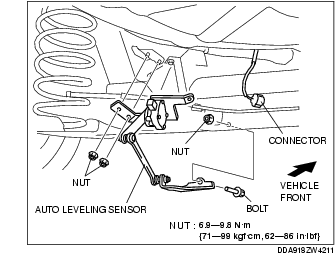

Auto leveling sensor removal/installation 1. Disconnect the negative battery cable. 2. Jack up the vehicle. 3. Disconnect the connector. 4. Remove the nuts, then remove the auto leveling sensor. 5. Install in the reverse order of removal.